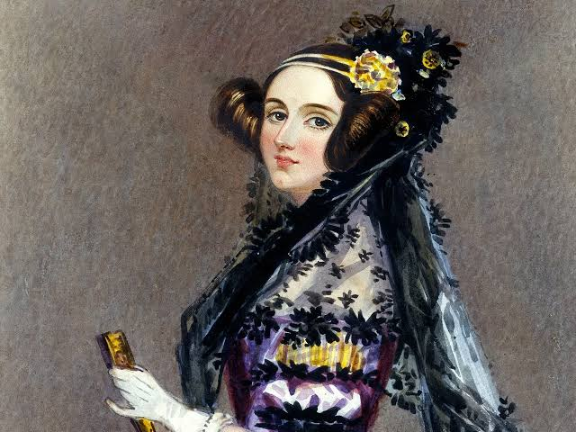
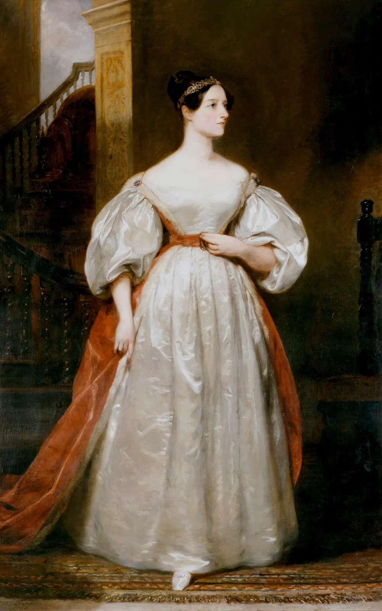

The Enchantress of Numbers
Visionary
Programmer.

Her Origin
The Poetical Scientist
Born in 1815, Augusta Ada Byron was the daughter of the infamous poet Lord Byron and mathematician Lady Byron. Fearing Ada would inherit her father's volatile poetic temperament, her mother raised her with a strict emphasis on mathematics, logic, and science.
Despite the rigid upbringing, Ada developed a unique perspective she called "poetical science." She believed imagination was crucial for exploring unseen mathematical truths, bridging the gap between rigorous logic and creative vision.
Her defining legacy began when she met inventor Charles Babbage. Fascinated by his blueprints for a massive mechanical computing device called the Analytical Engine, Ada translated an article about it and added her own exhaustive notes.
A Defining Chronology
A Journey Through Time.
Deep Dive
Frequently Asked Questions
It was a proposed mechanical general-purpose computer designed by Charles Babbage. Although never fully completed during his lifetime, it contained all the logical elements of modern computers, including memory, processing, and looping.
While translating an article about the Analytical Engine, Ada added her own extensive notes. In "Note G," she wrote an algorithm to calculate Bernoulli numbers using the machine. This is widely recognized as the first computer algorithm ever published.
It was Ada's unique approach to mathematics. Unlike pure mathematicians of her time, she believed imagination was essential to understanding the unseen realities of math and science.


"The Analytical Engine weaves algebraic patterns, just as the Jacquard loom weaves flowers and leaves."— Augusta Ada King, Countess of Lovelace